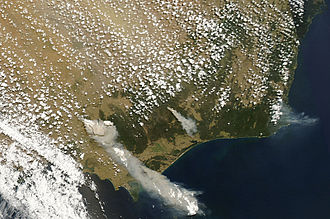

Days before Black Saturday
Melbourne endured three days above 43 degrees and the temperature peaked on 30 January at 45.1 degrees, one of the hottest days ever recorded in the city. These temperatures combined with extremely low levels of humidity to create tinder-dry conditions in the Victorian bush.
The wave of heat was caused by a slow moving high-pressure system that settled over the Tasman Sea, with a combination of an intense tropical low located off the North West Australian coast and a monsoon trough over northern Australia, which produced ideal conditions for hot tropical air to be directed down over southeastern Australia.
On 6 February 2009—the day before the fires started—the Premier of Victoria John Brumby issued a warning about the extreme weather conditions expected on 7 February: "It's just as bad a day as you can imagine and on top of that the state is just tinder-dry. People need to exercise real common sense tomorrow".[15] The Premier went on to state that it was expected to be the "worst day [of fires conditions] in the history of the state".